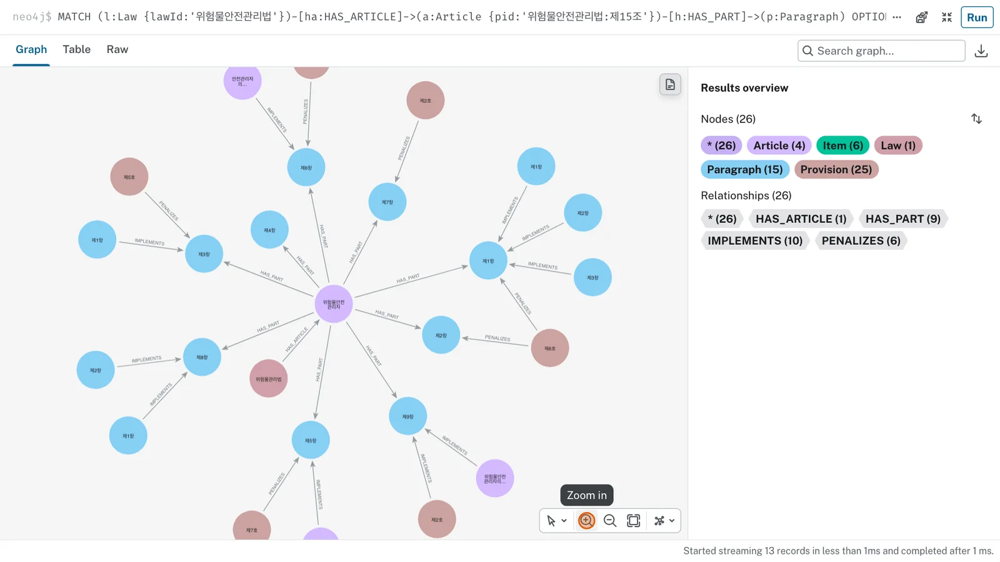
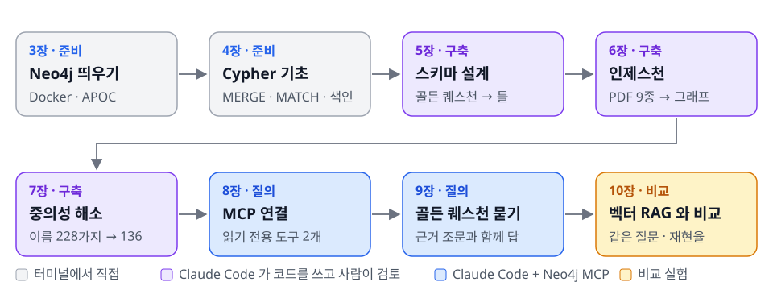

국가법령정보센터에서 받은 위험물안전관리법·화학물질관리법·폐기물관리법의 법률·시행령·시행규칙 PDF 9종을 Neo4j 그래프로 적재하고, Claude Code가 Neo4j MCP로 그래프를 조회해 골든 퀘스천 다섯 개에 근거 조문과 함께 답하게 만듭니다. 스키마 설계와 적재 코드는 Claude Code에게 맡기고, 사람은 원문과 대조해 검증합니다.
무엇을 만드나요#
회사 내부에서 사용할 「위험물 안전관리 매뉴얼」을 만든다고 가정합니다. 담당자는 "안전관리자가 퇴직하면 며칠 안에 다시 선임해야 하나?", "정기점검 결과는 누구에게 내나?" 같은 질문을 합니다. 답에는 반드시 근거 조문이 있어야 하고, 그 조문은 실제 법령과 글자까지 일치해야 합니다.
이 교재에서는 법령 9종을 조·항·호 단위의 노드로 나누고, 조문 사이의 인용·위임·벌칙을 관계로 연결해 Neo4j에 넣습니다. 그다음 Claude Code에 Neo4j MCP 서버를 연결해 질문을 받으면 Claude가 스스로 Cypher를 써서 그래프를 조회하고 답하게 합니다.

구축을 마치면 다음과 같이 답합니다. 골든 퀘스천 2번을 Claude Code에 물었을 때 받은 답의 첫머리입니다(헤드리스 실행 기록, 9장).
해임·퇴직한 날부터 30일 이내에 다시 선임해야 하고, 선임한 뒤에는 선임한 날부터 14일 이내에 소방본부장 또는 소방서장에게 선임신고를 해야 합니다. 모두 그래프에서 현행(
isCurrent: true)으로 표시된 조문입니다.1. 재선임 기한: 30일 이내 — 위험물안전관리법 제15조제2항 제1항의 규정에 따라 안전관리자를 선임한 제조소등의 관계인은 그 안전관리자를 해임하거나 안전관리자가 퇴직한 때에는 해임하거나 퇴직한 날부터 30일 이내에 다시 안전관리자를 선임하여야 한다. …
이 답을 작성하기 위해 Claude는 MCP 도구를 여섯 번 호출했습니다. 스키마 조회(get-schema) 한 번, Cypher 실행(read-cypher) 다섯 번이고, 그중 한 번은 Cypher 오류가 발생해 수정한 뒤 다시 실행했습니다. 이 과정은 2장에서 단계별로 살펴봅니다. 최종 그래프는 노드 6,818개 · 관계 18,643개입니다.
구축 의도와 골든 퀘스천#
골든 퀘스천(Golden Question)은 완성된 시스템이 반드시 맞혀야 하는 질문 목록입니다. 그래프 모델을 먼저 그리지 않고, 이 질문들에 답하려면 어떤 노드와 관계가 필요한지부터 살펴봅니다. 골든 퀘스천은 스키마 설계(5장)의 바탕이 되고, 구축을 마친 뒤에는 답을 채점하는 시험지(9장·10장)가 됩니다.
이 교재의 구축 의도는 「위험물 안전관리 매뉴얼 내부 구축」입니다. 이 의도에 따른 골든 퀘스천 다섯 개는 다음과 같습니다(golden-questions.md 원문).
- 제조소등에서 위치·구조·설비 변경 없이 저장·취급하는 위험물의 품명·수량(지정수량 배수)을 바꾸려면 언제까지 누구에게 신고해야 하는가?
- 위험물안전관리자가 해임되거나 퇴직하면 관계인은 며칠 안에 다시 선임해야 하고, 선임한 뒤에는 어떤 절차를 밟아야 하는가?
- 정기점검을 마친 제조소등의 관계인은 점검 결과를 언제까지 누구에게 제출해야 하는가?
- 제조소등에서 위험물 유출 사고가 발생했을 때 관계인과 이를 발견한 사람은 각각 무엇을 해야 하며, 관계인이 응급조치를 하지 않으면 누가 명령할 수 있는가?
- 안전관리자 선임 의무(제15조)나 정기점검 의무(제18조)를 지키지 않으면 어느 벌칙·과태료 조항이 적용되는가?
다섯 질문은 근거가 분포하는 방식이 서로 다릅니다.
| 질문 | 핵심 근거 | 그래프에서 따라갈 경로 |
|---|---|---|
| 1 | 법 제6조제2항 | 법률 조항 → 시행령·시행규칙의 위임 조문 |
| 2 | 법 제15조제2항·제3항 | 한 조문 안의 두 항 + 시행규칙의 신고 절차 |
| 3 | 법 제18조제2항 | 법률 조항 → 권한 위임 |
| 4 | 법 제27조 | 한 조문 안의 여러 주체(관계인, 발견한 사람, 소방본부장·소방서장) |
| 5 | 법 제35~37조·제39조의 호 | 의무 조항 ← 벌칙 호 → 형량. 여러 조문을 거쳐야 합니다 |
5번처럼 여러 조문을 거쳐야 답을 찾을 수 있는 질문 때문에 그래프를 사용합니다. 1장에서 자세히 설명합니다.
전체 흐름#

1·2장에서 GraphRAG의 개념과 동작 과정을 먼저 살펴보고, 3장부터 직접 따라 합니다. 5장 이후에는 Claude Code에 프롬프트를 입력하고, 사람이 결과를 원문과 대조하는 과정을 반복합니다. 프롬프트는 모두 그대로 붙여 넣을 수 있게 실었습니다.
장 안내#
| 장 | 하는 일 | 주로 쓰는 것 |
|---|---|---|
| 1. 왜 그래프인가 | Text2SQL·기본 RAG의 한계, 멀티홉 질의, 온톨로지와 인스턴스, LPG와 Neo4j | |
| 2. GraphRAG 동작 과정 | 실제 기록으로 살펴보는 적재 3단계와 질의 5단계 | |
| 3. Docker로 Neo4j 띄우기 | Neo4j 5.26 + APOC, 메모리 상한, 접속 확인 | docker run, Neo4j Browser |
| 4. Cypher 기초 | CREATE·MERGE·MATCH, 가변 길이 경로, 제약과 전문 색인 |
cypher-shell |
| 5. 골든 퀘스천에서 스키마 설계하기 | 질문에서 레이블·관계·속성 정하기 | Claude Code |
| 6. 인제스천 바이브 코딩 | PDF → 조·항·호 → Neo4j, 원문 대조 검증 | uv, PyMuPDF, Claude Code |
| 7. 엔티티 추출과 중의성 해소 | LLM 방식과 규칙·사전 방식, 사람 검토 | claude -p |
| 8. Neo4j MCP 서버 연결 | 읽기 전용으로 연결하기 | uvx, .mcp.json |
| 9. 골든 퀘스천 5개 묻기 | 다섯 질문과 답, 실제 기록으로 동작 과정 다시 보기 | get-schema, read-cypher |
| 10. 벡터 RAG로 같은 질문 | 같은 질문에 벡터 검색으로 답하고 재현율 비교 | Chroma, BM25 |
| 11. 마무리 | 정리, 한계와 어려운 점, 확장 과제, 참고 자료 | |
| 부록 · 문제 해결 | 문제 상황과 해결 방법 모음 |
준비물#
| 구분 | 준비할 것 | 이 교재에서 쓴 것 |
|---|---|---|
| 그래프 DB | Docker Desktop(컨테이너에 메모리 2GB를 할당할 수 있어야 함) | Docker 29.1.2, 이미지 neo4j:5.26(5.26.33 Community) + APOC. 실제 사용 메모리 926MiB |
| 에이전트 | Claude 유료 플랜(Pro 이상)으로 로그인한 Claude Code | Claude Code 2.1.331, 기본 모델 Fable 5.2(노력 수준 medium). 엔티티 추출만 haiku |
| 파이썬 | uv (Python 3.12는 uv가 내려받습니다) | uv 0.9.18, Python 3.12.12, PyMuPDF 2.1, neo4j 드라이버 6.4 |
| 버전 관리 | Git | 단계마다 커밋 |
| 법령 | 국가법령정보센터의 법령 PDF 9종 | 아래 표 |
Neo4j MCP 서버는 uvx로 실행하므로 따로 설치하지 않습니다. 10장의 비교 실험을 직접 실행하려면 임베딩에 필요한 준비물이 더 있습니다(10장에서 안내).
법령 PDF 받기#
- 국가법령정보센터(law.go.kr)에서 법령 이름(예:
위험물안전관리법)으로 검색해 현행 법령 본문을 엽니다. - 본문 화면의 저장 기능에서 파일 형식으로 PDF를 선택해 법령 본문을 내려받습니다.
- 시행령과 시행규칙도 각각 검색해 같은 방법으로 내려받습니다. 세 법령 × 법률·시행령·시행규칙으로 9개입니다.
이 교재에서 쓴 판본은 다음과 같습니다. 파일 이름은 사이트에서 지정한 그대로 「법령명(종류)(번호)(시행일)」입니다.
| 법령 | 법률 | 시행령 | 시행규칙 |
|---|---|---|---|
| 위험물안전관리법 | 제20231호, 2025-08-07 시행 | 제36432호, 2026-07-01 시행 | 행정안전부령 제628호, 2026-07-01 시행 |
| 화학물질관리법 | 제21531호, 2026-10-08 시행 | 제36744호, 2026-10-08 시행 | 기후에너지환경부령 제1호, 2025-10-01 시행 |
| 폐기물관리법 | 제21129호, 2026-11-12 시행 | 제36811호, 2026-11-12 시행 | 기후에너지환경부령 제70호, 2026-11-12 시행 |
판본이 다르면 숫자가 달라집니다
법령은 수시로 개정됩니다. 나중에 내려받으면 번호와 시행일이 달라지고, 조·항·호 수와 노드·관계 수도 이 교재와 조금씩 달라질 수 있습니다. 같은 결과를 확인하려면 위 판본을 연혁에서 찾아 내려받으세요. 또한 이 PDF에는 별표·서식의 본문이 포함되어 있지 않습니다(그래서 그래프에도 없습니다. 11장 「한계」 참고).
걸리는 시간과 비용#
실제 실행 기록입니다. 모델이 생각하는 시간은 실행할 때마다 달라집니다.
| 단계 | 기록된 시간 | 비용(API 요금 환산) |
|---|---|---|
| Neo4j 컨테이너 시작(3장) | 로그 기준 4.6초 | |
| 스키마 설계(5장) | 초기 설계 4분 56초 + 수정 4분 36초 | |
| 인제스천 코드 작성(6장) | 14분 35초 + 띄어쓰기 수정 5분 39초 | |
| 파싱 · 적재 실행(6장) | 9개 PDF 파싱 1.8초, 첫 적재 3.6초, 재적재 약 2초 | |
| 엔티티 추출(7장) | 조문 157개에 157번 호출, 6개 동시 처리로 약 6분 | $0.268 |
| 중의성 해소 LLM 방식(7장) | 1번 호출 94.9초 | $0.0156 |
| MCP 연결(8장) | Claude가 문서 확인·설정·시험까지 1분 9초 | |
| 질문 하나(9장) | 대화형 21.6~39.3초, 헤드리스 평균 23.5~42.8초 | 헤드리스 평균 $0.45~0.88 |
터미널 녹화 길이를 모두 더하면 약 93분입니다(모델의 사고 시간과 대기 시간 포함). 비용 칸은 claude -p가 반환한 API 요금 환산치입니다. 구독 플랜으로 로그인한 Claude Code에서는 따로 청구되지 않고 플랜의 사용 한도에서 차감됩니다. 질문 비용이 추출 비용보다 훨씬 큰 것은 질의에 Fable 5.2를 썼고, 질문마다 컨텍스트가 평균 약 5만 자였기 때문입니다(11장).
법령 해석은 원문으로
이 교재의 답은 모두 원문과 대조해 정확성을 확인했지만, 모델이 쓰는 문장과 Cypher는 실행할 때마다 달라질 수 있습니다. 실무에서 쓸 때는 답에 붙은 근거 조문을 반드시 원문으로 확인하세요.
확인 문제#
스키마를 그리기 전에 골든 퀘스천부터 정하는 이유는 무엇인가요?
답해야 할 질문에 따라 그래프에 담을 노드와 관계가 정해지기 때문입니다. 예를 들어 5번 질문에 답하려면 벌칙 호가 어느 의무 조항을 가리키는지(PENALIZES)와 형량(IMPOSES)이 관계로 표현되어 있어야 합니다. 질문 없이 모델부터 그리면 불필요한 내용을 담거나 필요한 관계를 빠뜨리기 쉽습니다. 골든 퀘스천은 구축을 마친 뒤 답을 채점하는 기준도 됩니다.